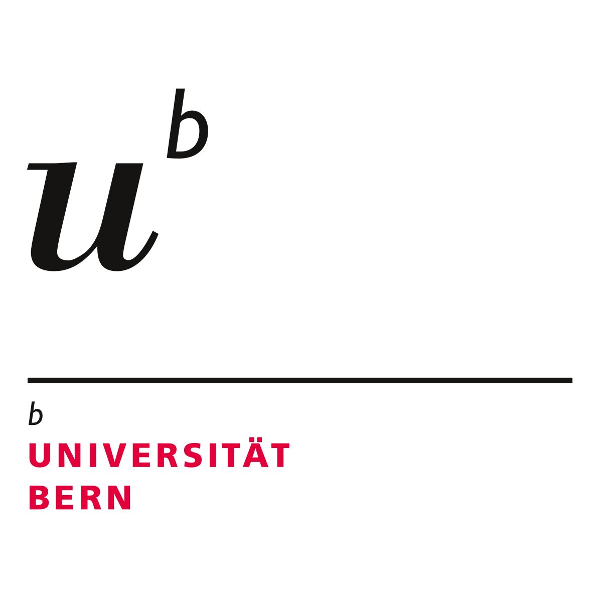
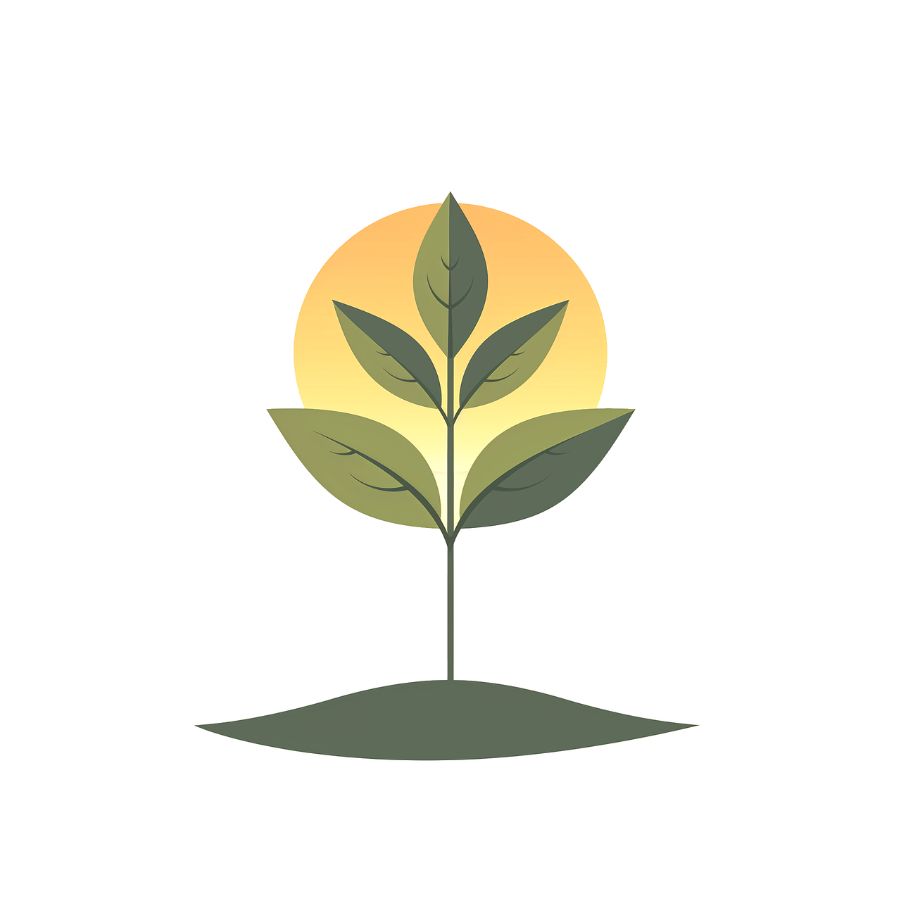

Loubet–Bonino Grégory
Age: 23
"Become who you are, and be what only you can be." — Friedrich Nietzsche
Curious Determined Hard-worker
Studies

Software Engineering PhD, Bern University, 2025–???- Master 3EA, Centrale Lyon, 2024–2025
- Hardware & Embedded Systems, Telecom Saint-Étienne, 2022–2025
- CPGE TSI, Lycée Gustave Eiffel, 2020–2022
Work
- PhD on InnoGuard Project, SEG Team (Bern University), 2025–2028
- Master thesis: FVLLMONTI Project, INL, 2025
 Freelance: PCB & Embedded Design, 2023–2025
Freelance: PCB & Embedded Design, 2023–2025
Hobbies
- Rugby player (USG Genlis, Telecom rugby Team) – 19 years
- Robotics (association member, 4 years)

Plants and gardening
Interesting Things
 Love Metal music
Love Metal music Dream of becoming rich to share it with friends
Dream of becoming rich to share it with friends Love cats
Love cats
What I’m Working On
Working on non functionnal property of drones and swarms